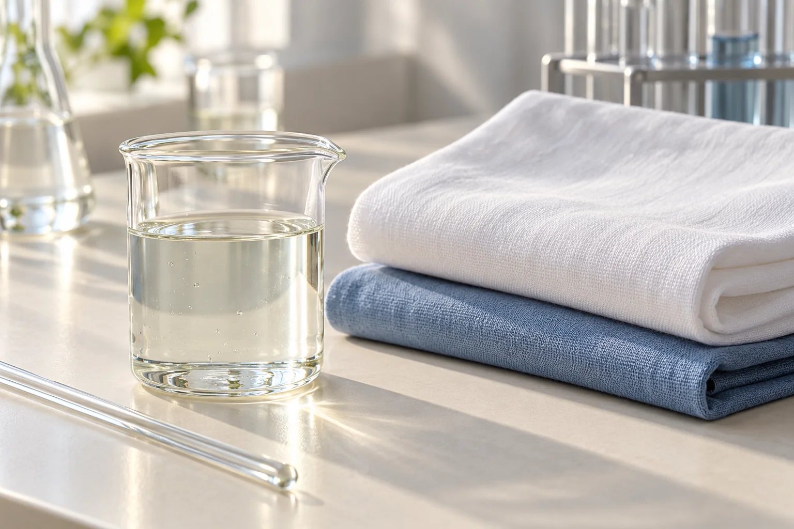

Enzymes for detergent formulation
Enzyme choice connects the stain-removal task with the detergent system. Product format, formulation compatibility and storage conditions determine how an enzyme is incorporated into the finished product.
Explore the application
Build the enzyme function into the formula
Use protease when the task concerns protein-containing stains. Where several enzyme functions are needed, start with the actual blend composition and the required cleaning objectives.
Liquid systems and powder systems pose different questions
In liquid formulations, consider compatibility and enzyme activity during storage. In powder formulations, consider blending, distribution and handling. Review cleaning performance in the finished formulation.
Connect storage with washing performance
The activity present after storage and the result in a washing comparison are linked but distinct. Temperature, wash time and the reference formulation keep the cleaning brief grounded in the intended use.
Evaluate enzymes in the intended liquid detergent system
Describe the liquid formulation and the conditions at the proposed enzyme-addition stage. Include the process temperature, pH and any exposure time relevant to incorporation.
Plan an initial assessment and a storage assessment for the formulation. Record physical observations alongside activity measurements, using methods that are appropriate for the product and formulation matrix.
When comparing formulations, identify the component or process change being tested. Keep other conditions comparable so that the result can be interpreted.
Discuss your formulation requirements
Include the cleaning task, liquid or powder format, relevant formulation conditions and the stability or washing question.
Current implementation notes
Confirmed inputs in use: company identity and contacts, supplied product materials and the agreed application scope.
Implementation: production domain, enquiry delivery and actual data-processing configuration remain part of the launch work. Forms in this preview do not submit.
Media: concept scenes and packaging positions are layout aids; company media replaces them at the final asset stage.